음료 소개
-
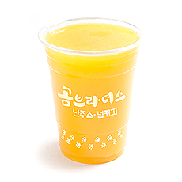오렌지 Orange
오렌지의 비타민 C성분은 항산화 작용을 통해 멜라닌 색소를 억제하여 기미, 주근깨, 주름을 예방해주는 오렌지 생과일 주스
오렌지Orange
-
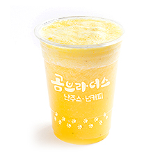파인애플 Pineapple
소화효소가 있어 위장장애에 도움이 되고 피로회복을 돕고 식욕을 복돋아 주는 파인애플 생과일 주스
파인애플Pineapple
-
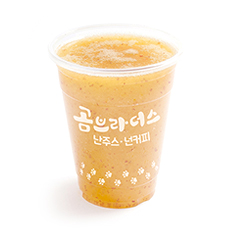사과 Apple
사과에 함유된 유기산이란 성분이 철분의 체내흡수를 도와주어 빈혈에 좋고 피로회복, 치매예방에도 좋은 사과 생과일 주스
사과Apple
-
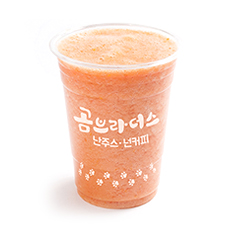방울토마토 Cherry Tomato
비타민 C와 카로티노이드가 풍부하며 칼로리가 적어 다이어트에 도움이 되고 갈증해소 및 피로 회복에 좋은 방울토마토 생과일 주스
방울토마토Cherry Tomato
-
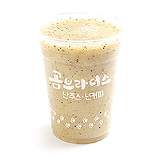키위 Kiwi
달콤하고 상큼한 키위는 빈혈에 효능이 좋아 임산부도 섭취 가능한 키위 생과일 주스
키위Kiwi
-
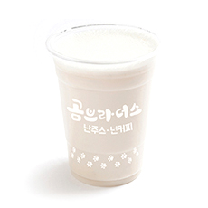바나나 Banana
과육의 약 70%가 수분이고 탄수화물이 25%인 바나나는 비타민 A와 C가 풍부하여 피부 미용에 도움을 주는 바나나 생과일 주스
바나나Banana
-
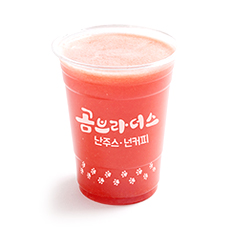자몽 Grapefruit
즙이 풍부하며 맛은 신맛, 단맛이 있으며 쓴맛도 조금 섞여 있는 자몽은 반 개만 먹어도 하루에 필요한 비타민 C를 섭취 가능한 자몽 생과일 주스
자몽Grapefruit
-
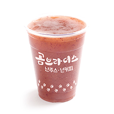포도 Grape
포도의 씨와 껍질이 체내에 쌓인 독소와 노폐물을 제거해 피를 맑게 하고 혈액순환을 돕는 천연 피로 해소제 포도 생과일 주스
포도Grape
-
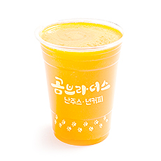감귤 Citrus
비타민 P성분이 들어 있어 혈액순환을 돕고 모세혈관을 튼튼하게 해주어 콜레스테롤을 억제하는 효능이 있는 감귤 생과일 주스
감귤Citrus
-
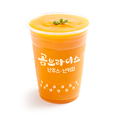홍시 Soft Persimmon
‘동의보감’에 따르면 홍시는 숙취를 풀어주는 효능이 있으며, 심장과 폐를 튼튼하게 하고 갈증을 없애주며 소화 기능을 좋아지게 하는 홍시 생과일 주스
홍시Soft Persimmon
-
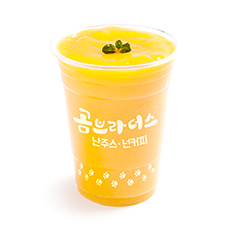망고 Mango
"모든 과실중의 왕" 이라 불리며 약 15%의 자당(sucrose)과 다량의 비타민 A, 비타민 B, C가 함유된 망고 생과일 주스
망고Mango
-
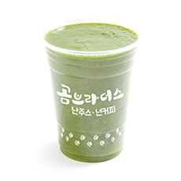키위+케일 Kiwi+Kale
키위와 케일을 함께 섭취시 혈중 콜레스테롤을 낮추는 효과와 동시에 고혈압 개선 효과도 있는 키위+케일 생과일 주스
키위+케일Kiwi+Kale
-
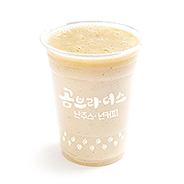키위+바나나 Kiwi+Banana
키위와 바나나에는 섬유질과 수용성 식이섬유인 펙틴이 풍부해서 쾌변에 도움을 주는 키위+바나나 생과일 주스
키위+바나나Kiwi+Banana
-
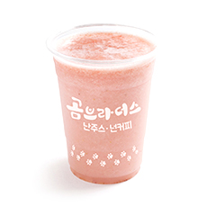딸기+바나나 Strawberry+Banana
딸기에는 비타민이 풍부하고 산성의 성질이 있어 남자에 좋고 씨앗에는 타우린이 있어 피로 회복 및 피부 미용에도 좋은 딸기+바나나 생과일 주스
딸기+바나나Strawberry+Banana
-
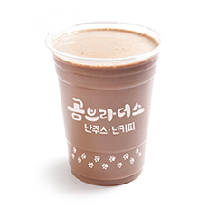초코+바나나 Chocolate+Banana
초콜릿의 주성분인 카카오에는 항산화물질인 폴리페놀이 풍부하고 비타민 A와 C가 풍부한 바나나가 조화롭게 믹스된 초코바나나 생과일 주스
초코+바나나Chocolate+Banana
-
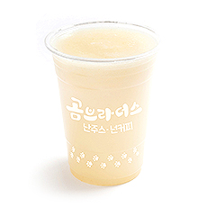W양배추+배 Cabbage+Pear
섬유질이 풍부하여 변비 개선, 콜레스테롤 배출 효과와 함께 해독작용이 뛰어나 숙취해소에 최고인 양배추+배 생과일 주스
W양배추+배Cabbage+Pear
• 본 사이트의 저작물은 영리 목적이 아닌 개인 포트폴리오 용도로 이용하기 위함을 알립니다 •